🎮 Os jogos
Na tela inicial, o aluno toca em 🎮 Jogos e vê todos os jogos. O menu Categoria, no alto, filtra os jogos:
Português, Matemática, Inglês e Psicopedagogia.
Como o aluno começa
- Digita o primeiro nome e toca em Entrar ▶.
- Toca em 🎮 Jogos e escolhe um jogo (se quiser, filtra pelo tema).
- Escolhe para quem vai o relatório (só nos jogos do app).
- Joga! No fim, vê como foi, e o professor recebe o relatório.
💡 Os jogos com ↗ no cartão são de outros sites: abrem em outra aba e têm o próprio relatório, que não vem para o e-mail cadastrado aqui.

📚 Jogo de Ortografia
Português
Para que serve
- Treina as dúvidas mais comuns da escrita: S ou SS, Ç ou C, R ou RR, M ou N, G ou J, X ou CH e os acentos.
- Liga a figura, o som e a escrita da palavra (o aluno pode ouvir a palavra).
- Cada nível começa com o Segredo do Plenix, uma regra curta para o aluno entender o porquê.
- O relatório mostra ao professor quais palavras o aluno errou e o que revisar.
Como jogar
- Escolha o nível: Fácil (palavras curtas com figura), Médio (palavras do dia a dia) ou Difícil (palavras longas).
- Leia o Segredo do Plenix e toque em Começar ▶.
- Olhe a figura, toque em 🔊 Ouvir a palavra se quiser e escolha a letra que completa a palavra.
- Cada nível vale até 3 estrelas ⭐.
🌧️ Chuva de Erros
Português
Para que serve
- Ajuda a reconhecer rápido a forma certa de escrever as palavras.
- Treina a atenção, a leitura rápida e a percepção visual das letras.
- O aluno pode treinar só os casos que mais erra (escolhe o tipo de palavra).
Como jogar
- Escolha o que vai pegar: as palavras CERTAS ou as palavras ERRADAS.
- Escolha quais palavras vão cair (todas ou um tipo, como S/SS ou acentos) e toque em Começar ▶.
- As palavras caem do céu: toque só nas que você escolheu, antes que sumam.
- Quanto mais rápido você acerta, mais rápido elas caem. Acertos seguidos dão bônus!
🔢 Chuva de Matemática
Matemática
Para que serve
- Desenvolve o cálculo mental e a rapidez nas quatro operações: adição, subtração, multiplicação e divisão.
- A dificuldade se ajusta ao aluno: sobe quando ele acerta e desce quando ele erra, então ninguém fica travado.
- O relatório mostra quais contas o aluno errou.
Como jogar
- Escolha quais contas vão cair e toque em Começar ▶.
- Uma conta cai de cada vez. Toque na resposta certa embaixo, antes que a conta chegue ao chão.
- São 20 contas. Acertou: a próxima fica mais difícil. Errou: fica mais fácil.
🎯 Tiro Certo
Matemática
Para que serve
- Ensina ângulos e o uso do transferidor de um jeito visual.
- Treina a localização no espaço e a estimativa de ângulos.
Como jogar
- O círculo é um transferidor: o canhão fica no 0° (à esquerda), o 90° em cima, o 180° à direita e o 270° embaixo.
- Um míssil aparece no círculo. Veja por qual ângulo ele está vindo.
- Toque no ângulo certo para o canhão derrubar o míssil.
- Você começa com 4 tiros e cada acerto vale +1 tiro. São 20 mísseis.
⚖️ Peso Certo
Matemática
Para que serve
- Trabalha as medidas de massa e a conversão de unidades: kg, hg, dag, g, dg, cg e mg.
- Treina a soma e a estimativa: o aluno precisa planejar antes de testar.
- Tem uma tabela de conversão para consultar durante o jogo.
Como jogar
- Escolha o nível e toque em Começar ▶.
- Um objeto aparece no prato da esquerda, com o peso dele.
- Toque (ou arraste) os pesos para o prato da direita até achar que equilibra.
- Toque em ⚖️ Testar. A balança só se mexe no teste! Errou? Perde uma vida ❤️ (são 3).
- Na dúvida, toque em 📏 Tabela. São 10 objetos por partida.
📝 Questionário da aula
Todas as matérias
Para que serve
- O professor revisa o conteúdo da aula com as próprias perguntas, de qualquer matéria.
- O aluno vê na hora se acertou, e o professor recebe o relatório com as perguntas para revisar com a turma.
Como jogar
- Abra pelo link que o professor mandou, ou toque em 📝 Questionário da aula na tela inicial e escolha o questionário.
- Leia a pergunta com calma e toque na resposta certa.
- Toque em Próxima ➜ até o fim e veja como foi.
💡 Como o professor cria e compartilha: veja os passos 7 a 10.
💡 Jogo do Reflexo
Psicopedagogia
Para que serve
- Treina a atenção, a memória de trabalho (guardar a ordem e quantas vezes cada cor piscou) e o reflexo.
- Junta visão e audição: cada lâmpada tem uma cor e um som diferentes.
- Exercita o controle da impulsividade: os botões ficam em outro lugar, então é preciso procurar a cor certa antes de tocar.
- A dificuldade se ajusta ao aluno: sobe quando ele acerta e desce quando ele erra.
- O relatório por e-mail é completo: tempo de resposta em cada rodada, tempo médio, resposta mais rápida e mais lenta,
nível máximo, tipos de erro (tocou a mais, tocou a menos, trocou a ordem, cor que não piscou) e se o aluno ficou mais rápido ou mais lento durante a partida.
Como jogar
- No alto ficam 4 lâmpadas (vermelha, amarela, verde e azul). Embaixo, 4 botões das mesmas cores, em outra ordem.
- Olhe e escute: as lâmpadas piscam. Por exemplo, a azul pisca 2 vezes.
- Quando aparecer "Sua vez!", toque no botão azul 2 vezes. Se piscarem várias cores, repita na mesma ordem.
- Acertou: o próximo desafio tem mais cores, mais piscadas e fica mais rápido. Errou: fica mais fácil.
- Quanto mais rápido responder, mais pontos. São 15 rodadas, com 8 níveis.


💡 Jogo do Reflexo Nível 2
Psicopedagogia
Para que serve
- Tudo o que o Jogo do Reflexo treina (atenção, memória, reflexo), com mais uma etapa: achar a bolinha certa e levar ao copo certo.
- Trabalha a coordenação olho-mão e a motricidade fina (arrastar com o dedo) e o planejamento da ação.
- Exige mais controle inibitório: lâmpada, copo e bolinha da mesma cor nunca ficam um embaixo do outro.
- O relatório por e-mail é o mesmo do Jogo do Reflexo, com um erro a mais: bolinha no copo de outra cor.
Como jogar
- No alto, 4 lâmpadas; no meio, 4 copos; embaixo, 4 filas de bolinhas. Cada fila mostra 2 bolinhas: quando uma sai, aparece outra.
- Olhe e escute: por exemplo, a lâmpada azul pisca 2 vezes.
- Na sua vez, arraste 2 bolinhas azuis até o copo azul. Se piscarem várias cores, faça na mesma ordem.
- Prefere sem arrastar? Toque na bolinha e depois no copo.
- Acertou: fica mais difícil e os copos e as bolinhas mudam de lugar. Errou: fica mais fácil. Quanto mais rápido, mais pontos.
🧩 Rotina Certa
Psicopedagogia
Para que serve
- Treina a sequência e o planejamento (funções executivas): o que vem primeiro, no meio e por último.
- Usa tarefas do dia a dia da criança: tomar banho, almoçar, ir para a escola, fazer um bolo, escovar os dentes e a hora de dormir.
- Ajuda na autonomia: a criança organiza na cabeça as etapas da própria rotina.
- O relatório mostra quantas tentativas cada rotina precisou, o tempo para ordenar e qual passo ela trocou de lugar.
Como jogar
- Aparece uma rotina (ex.: Tomar banho) com os passos embaralhados numa pilha de botões.
- Arraste os botões para cima ou para baixo até ficarem na ordem certa. Sem arrastar: toque em dois botões para eles trocarem de lugar.
- Toque em ✔ Testar a ordem. Os passos certos ficam verdes e presos; os vermelhos você arruma de novo (até 3 tentativas).
- Acertou de primeira: a próxima rotina tem mais passos (de 3 até 6). Precisou de ajuda: a próxima fica mais curta.
- São 6 rotinas por partida. Quanto mais rápido e com menos tentativas, mais pontos.
🔴 Fichas Coloridas
Matemática e Psicopedagogia
Para que serve
- Ensina a agrupar e trocar: 3 vermelhas viram 1 azul e 3 azuis viram 1 amarela. É a mesma ideia de juntar 10 unidades em 1 dezena (valor posicional).
- Treina o cálculo (vermelha vale 1, azul vale 3, amarela vale 9) e a multiplicação por 3.
- Exercita a atenção e o planejamento: antes de passar a vez, é preciso conferir se ainda dá para trocar.
- O relatório mostra as trocas, os esquecimentos e as contas de pontos, inclusive o erro comum de contar as fichas sem olhar o valor de cada cor.
Como jogar
- Escolha o nível: Fácil (cartelas de 1 a 3, vence com 1 amarela), Médio (1 a 6, 2 amarelas) ou Difícil (1 a 9, 2 amarelas).
- Na sua vez, toque em 🃏 Tirar cartela: você ganha esse número de fichas vermelhas.
- Toque em 3 fichas iguais: elas se juntam e viram 1 ficha da cor seguinte.
- Quando não der mais para trocar, toque em ✔ Pronto. Nos níveis Médio e Difícil, responda quantos pontos você tem.
- Depois é a vez do Plenix. Vence quem juntar as amarelas primeiro!
🔎 Palavra Escondida
Português e Psicopedagogia
Para que serve
- Treina a atenção seletiva e a rapidez: achar a palavra certa no meio de linhas de letras que não param de chegar e de iscas (pedaços parecidos com o começo da palavra).
- Ajuda na leitura e no reconhecimento de palavras, letra por letra e da esquerda para a direita.
- O ritmo se ajusta à criança: quanto mais rápido ela acha as palavras, mais rápido entram as linhas. Quanto menos tempo, mais pontos.
- O relatório mostra o tempo de cada palavra, as linhas que caíram sem a palavra ser achada, o ritmo no fim e o que o aluno marcou errado antes de acertar.
Como jogar
- As letras chegam em linhas de 10: cada linha nova entra em cima e empurra as outras para baixo. Cada linha esconde uma palavra. A barrinha embaixo mostra quando chega a próxima linha.
- Não há figura nem outra dica: só as letras. A criança lê a linha e reconhece a palavra. Os níveis mudam o tamanho das palavras: de 5 e 6 letras, de 6 e 7 e, por fim, de 7 a 9 letras.
- Toque nas letras da palavra, uma depois da outra, ou arraste o dedo por cima. Acertou? A linha some.
- O quadro tem 6 linhas. Cheio, a linha de baixo (em vermelho) cai e a palavra é perdida. Marcou errado? Entram 2 linhas de uma vez.
- Quanto mais rápido a criança acha as palavras, mais rápido entram as linhas; se perder uma, elas voltam a vir mais devagar. Acertou de primeira: o próximo nível tem menos dica e palavras maiores. São 10 palavras.
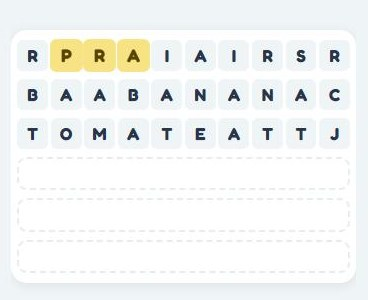
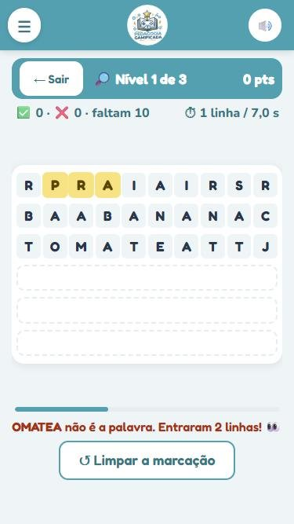
🧱 Copie Certo
Matemática e Psicopedagogia
Para que serve
- Trabalha a percepção visual, a orientação espacial, o raciocínio lógico e a atenção aos detalhes.
- A criança compara o modelo com a montagem, casa por casa: forma, direção do triângulo e cor de cada peça.
- O relatório mostra os tipos de diferença (direção errada, forma errada, cor errada, peça faltando ou a mais) e a casa exata do primeiro erro.
Como jogar
- Observe o modelo pequeno, ao lado do quadro grande (4 × 4).
- Escolha a cor nos potes (nos modelos de uma cor só, não precisa) e arraste a peça (quadrado ou triângulo, nas 4 direções) até o quadradinho certo. Ou toque na peça e depois no quadradinho.
- Tocou numa peça já colocada? Ela sai. ↶ Apagar tira uma peça por vez, começando pela última colocada.
- Toque em ✔ Conferir: o que está certo fica verde e preso; o que está diferente fica vermelho e sai, para refazer (até 3 tentativas).
- Acertou de primeira: o próximo modelo é mais difícil (nível 1 com uma cor, nível 2 com duas cores, nível 3 com mais peças e um pote de cor a mais para atrapalhar). São 6 modelos.
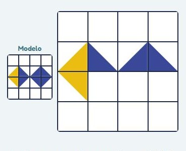
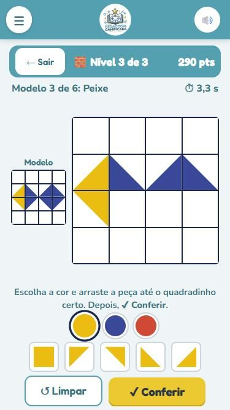
⛵ Barquinhos
Matemática e Psicopedagogia
Para que serve
- Trabalha a lateralidade (esquerda e direita), a atenção e a contagem.
- Nos níveis altos, os barcos balançam e depois afundam: é preciso contar rápido e guardar os números na memória.
- Se a criança erra 2 vezes seguidas, aparece uma janelinha que ensina esquerda e direita (com a dica da mão que forma a letra L).
- O relatório mostra se ela trocou direita e esquerda ou contou errado, e quantas vezes precisou da explicação.
Como jogar
- Aparecem barcos virados para a esquerda ⬅ e para a direita ➡. Olhe para onde aponta a frente (o lado oposto à âncora).
- Conte quantos vão para cada lado e toque no botão certo: 3D – 2E quer dizer 3 para a direita e 2 para a esquerda.
- Acertou: vêm mais barcos (de 3 até 12, em até 3 fileiras). Errou: fica mais fácil. São 12 rodadas.
- Quanto mais rápido responder certo, mais pontos.
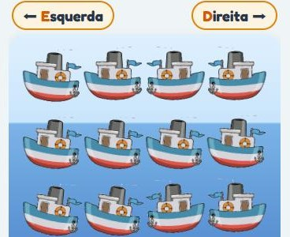
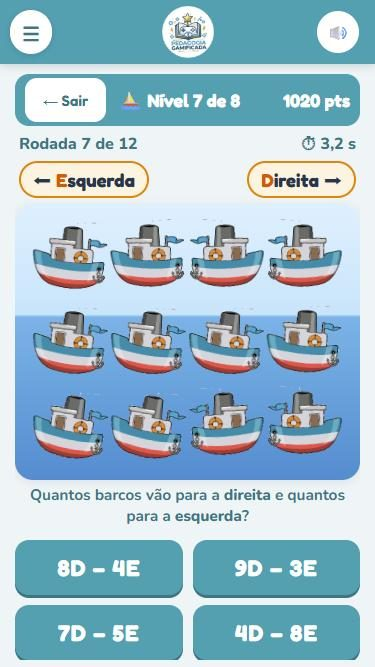
🔄 Giro Imaginário
Matemática e Psicopedagogia
Para que serve
- Treina a rotação mental: imaginar uma figura girando sem ver o movimento.
- Trabalha a orientação espacial, a noção de direita e esquerda (sentido do relógio) e a memória de trabalho nos comandos de "vai e volta".
- Nos níveis altos aparece a figura espelhada como alternativa: nenhum giro faz aquilo, e a criança precisa perceber.
- O relatório mostra o tipo de erro: girou para o lado contrário, girou vezes a mais ou a menos, escolheu sem girar ou a espelhada.
Como jogar
- Aparece uma figura colorida (quadrado em 4 partes, X, círculo, ampulheta, cruz ou 4 bolinhas) e um comando, por exemplo: "girou 2 vezes para a direita ↻↻".
- Cada giro é 1/4 de volta: para a direita ↻ (como o relógio) ou para a esquerda ↺.
- Imagine a figura girando e toque, entre as 4 alternativas, em como ela ficou.
- Depois da resposta, a figura gira de verdade, passo a passo, para conferir.
- Acertou: o próximo é mais difícil (mais giros, depois "vai e volta", como 2 para a direita e 1 para a esquerda). São 10 rodadas.
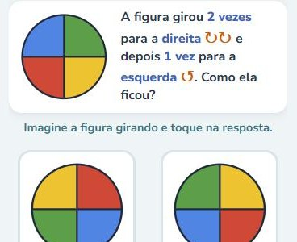
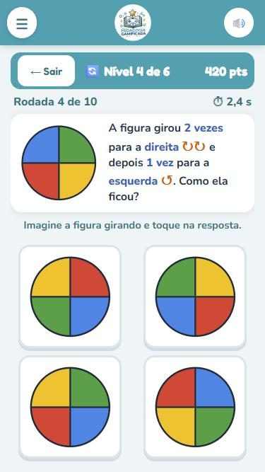
🕒 Jogo da Hora
Matemática e Psicopedagogia
Para que serve
- Ensina a ler as horas no relógio de ponteiros e no relógio digital, ligando um ao outro.
- Trabalha a diferença entre o ponteiro pequeno (hora) e o grande (minutos), contando de 5 em 5.
- Nos últimos níveis ensina AM e PM: AM é da meia-noite ao meio-dia (madrugada e manhã) e PM é do meio-dia à meia-noite (tarde e noite). A hora aparece cheia, de 24 h (16:00, 20:30), e a criança acha no relógio com AM ou PM: depois do meio-dia, tira 12 (16 − 12 = 4, ponteiro pequeno no 4, PM).
- O relatório mostra o tipo de erro: trocou os ponteiros, errou a hora (uma a mais ou a menos), errou os minutos ou trocou AM e PM.
Como jogar
- As rodadas se alternam: ora aparece a hora digital e a criança escolhe o relógio de ponteiros certo, ora aparece o relógio e ela escolhe a hora digital.
- São 4 alternativas. Depois da resposta, o jogo explica a leitura certa.
- Os níveis sobem a cada acerto: horas cheias, e meia, quartos de hora, de 5 em 5 minutos, AM e PM e, por fim, AM e PM de 5 em 5. São 12 rodadas.
- Errou 2 vezes seguidas: aparece uma janelinha que relembra como ler o relógio e o que são AM e PM.
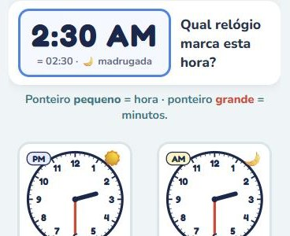
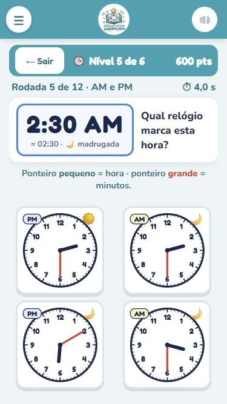
🧮 Somando Imagens
Matemática e Psicopedagogia
Para que serve
- Treina a visualização mental: imaginar uma figura nova a partir de outras, sem ver o resultado.
- Trabalha a ideia de somar (juntar) e subtrair (tirar), a atenção às cores e às posições e a memória de trabalho nas contas com 3 figuras.
- Nos níveis altos o ? fica no meio da conta (A + ? = C): a criança precisa pensar "ao contrário", comparando o resultado com as outras figuras.
- O relatório mostra o tipo de conta e o tipo de erro escolhido: trocou soma e subtração, esqueceu uma figura, faltou casa, casa a mais ou cor errada.
Como jogar
- Aparece uma conta com quadrados 3 × 3 de casas coloridas, por exemplo: figura + figura = ?.
- No +, a figura final tem todas as casas pintadas, cada uma com a sua cor. No −, apaga-se da primeira figura as casas pintadas na segunda.
- Embaixo aparecem 4 alternativas e só uma é a certa. As erradas imitam os erros mais comuns: fazer a outra conta (+ no lugar de −), esquecer uma figura, faltar casa, sobrar casa ou trocar a cor.
- Depois da resposta, a certa fica em verde e aparece no lugar do ?. São 10 contas; os níveis: somar, subtrair, os dois misturados, qual figura falta, contas com 3 figuras e, por fim, 3 figuras com o ? em qualquer lugar.
- Errou 2 contas seguidas: aparece uma janelinha com um exemplo de soma e um de subtração.
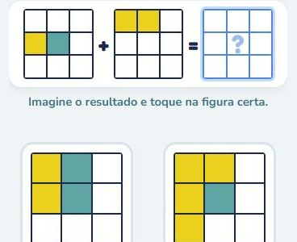
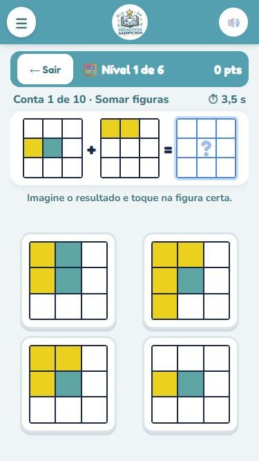
⚖️ Descobrindo o Peso
Matemática e Psicopedagogia
Para que serve
- Prepara para a álgebra: a ideia de incógnita (o valor que falta) com uma balança de verdade, sem letras.
- Trabalha a subtração (tirar o que já se sabe), a multiplicação (peças repetidas), a divisão (duas peças iguais) e o raciocínio em duas etapas.
- O relatório mostra o tipo de erro: esqueceu de tirar o peso conhecido, somou em vez de subtrair, tirou só uma das peças repetidas, esqueceu de dividir ou errou a conta.
Como jogar
- A balança mostra o peso total das peças. A legenda diz quanto pesam as peças conhecidas (ex.: 🔵 = 2 kg).
- A criança descobre quanto pesa a peça que falta e toca na resposta certa entre 4 alternativas. Depois aparece a conta (ex.: 12 − 2 = 10).
- Acertou, fica mais difícil; errou, fica mais fácil. Os níveis: uma peça conhecida, várias, peças repetidas, a peça que falta repetida (divide por 2), duas balanças e, por fim, duas balanças com divisão e várias formas misturadas.
- São 6 formas (círculo, triângulo, quadrado, estrela, losango e hexágono) e 10 rodadas. Errou 2 seguidas: uma janelinha mostra um exemplo.
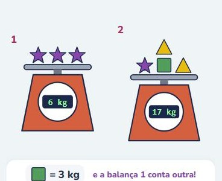
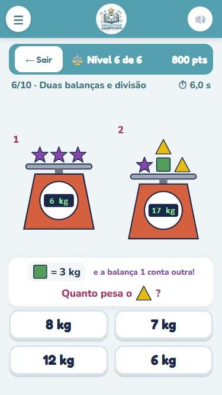
🧩 Chaves de Sobreposição
Matemática e Psicopedagogia
Para que serve
- Treina a percepção visual e a atenção aos detalhes: imaginar duas figuras uma em cima da outra, como folhas transparentes.
- Trabalha a análise parte por parte (cores, cantos e marcas) e o raciocínio em etapas: a figura final junta as duas do meio, que já juntaram as quatro de cima.
- O relatório mostra o tipo de erro: pegou só uma das figuras, faltou uma parte, sobrou uma parte, trocou a cor ou trocou a marca por uma parecida.
Como jogar
- Aparece uma chave, como de campeonato: 4 figuras em cima, 2 quadrados em branco no meio e 1 embaixo.
- O quadrado que pisca é o da vez. A criança junta as duas figuras ligadas a ele e escolhe a certa entre 4 alternativas (só uma é certa).
- Respondeu, a figura certa entra no quadrado e vem o próximo: primeiro os dois do meio e, por fim, a figura final.
- Chave completa sem erro: a próxima tem mais partes, cores e marcas. Com 2 ou mais erros, a próxima fica mais fácil. São 6 chaves.
- Errou 2 seguidas: uma janelinha mostra um exemplo de sobreposição.
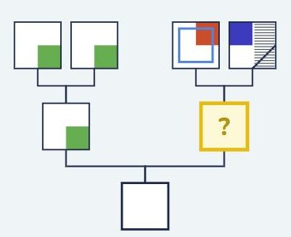
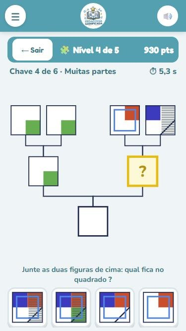
🛣️ Caminho da Memória
Psicopedagogia e Matemática
Para que serve
- Treina a memória visual e de sequência (guardar a ordem das formas e cores) e a orientação espacial num mapa.
- Exige planejamento: em cada cruzamento, escolher o vizinho certo, ligado por estrada.
- O relatório mostra até onde a criança lembrou (em qual passo errou) e o tempo de cada caminho.
Como jogar
- Aparece a sequência de formas do caminho, como 🟩 ➜ 🔺 ➜ 🔴, por 4 segundos por figura (dá para tocar em "Já memorizei").
- A sequência some e aparece o mapa: o carro na primeira forma e a casa no fim.
- A criança toca nos cruzamentos, na ordem, e o carro anda pela estrada. Só dá para ir para um cruzamento ligado por estrada.
- Chegou em casa: o próximo caminho tem mais cruzamentos, cores e formas. Errou: o carro para, o caminho certo aparece em verde e o próximo fica mais curto. São 8 rodadas.
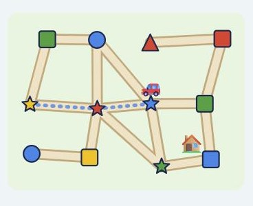
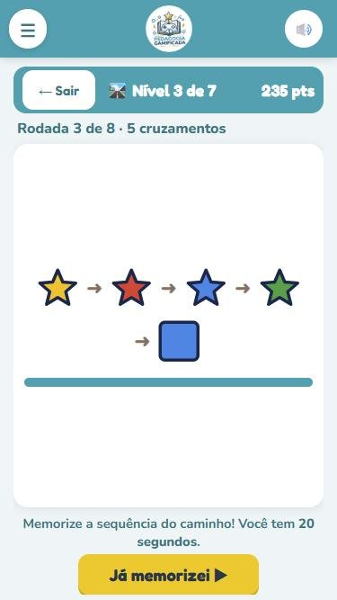
🚕 Siga o Táxi
Psicopedagogia e Matemática
Para que serve
- Treina a memória do trajeto (memória visuoespacial) e a atenção: guardar por onde o táxi passou.
- O relatório mostra em qual passo a criança errou e quantas vezes pediu para ver o táxi de novo.
Como jogar
- O táxi faz um caminho pelos cruzamentos até a casa, deixando um rastro.
- A criança pode tocar em "🔁 Ver o táxi de novo" quantas vezes quiser (cada repetição vale um pouco menos de pontos).
- Em "Agora é você", ela refaz o mesmo caminho com o carro, tocando nos cruzamentos.
- Acertou: o próximo caminho é mais longo. Errou: o caminho certo aparece em verde e o próximo fica mais curto. São 8 rodadas.
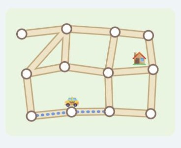
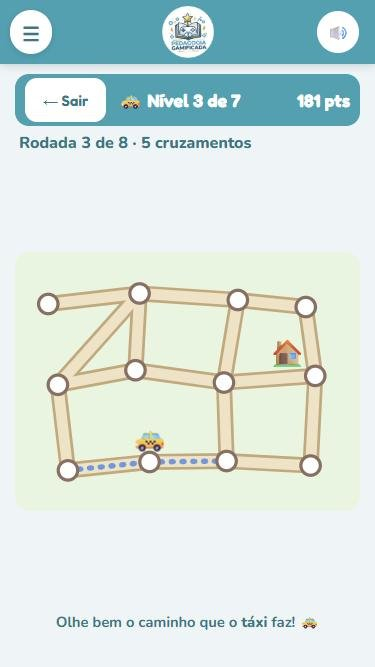
🚓 Polícia e Ladrão
Psicopedagogia
Para que serve
- Treina o controle inibitório: os botões de direção estão em lugares trocados, e a criança precisa obedecer à seta, não à posição do botão.
- Trabalha a orientação espacial num mapa visto de cima e o planejamento do caminho (calçadas e árvores bloqueiam a rua).
- O relatório mostra quantos ladrões foram presos, o tempo de cada um, os tiros e quantas vezes a viatura bateu (muitas batidas indicam confusão com as setas).
Como jogar
- A tela mostra uma cidade vista de cima e acompanha a viatura. Uma seta vermelha na borda aponta para onde está o ladrão.
- Cada toque numa seta vira a viatura para aquela direção e anda um pouco (segurando, ela continua). Nas esquinas, ela se alinha sozinha à rua.
- O 🔫 tiro sai do lado do motorista, para a frente. Cada acerto deixa o ladrão mais lento; com 3 tiros, ou encostando nele, ele é preso.
- As teclas de seta (como as de um teclado) estão sempre fora do lugar e mudam de lugar a cada 20 segundos (elas piscam para avisar), o que treina o reflexo. O ladrão fica mais rápido a cada nível. São 5 ladrões, 60 segundos cada.
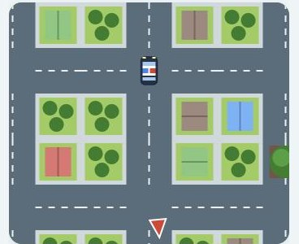
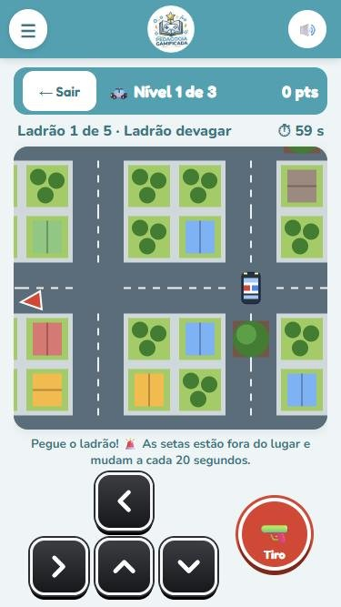
✏️ Ponto a Ponto
Psicopedagogia e Matemática
Para que serve
- Treina a memória visual e a percepção espacial: guardar um desenho e refazê-lo, linha por linha.
- Trabalha a atenção aos detalhes (de qual ponto sai e em qual chega cada linha) e a coordenação para ligar os pontos.
- O relatório mostra quantos desenhos ficaram iguais e, nos erros, quantas linhas faltaram e quantas sobraram.
Como jogar
- Aparece um modelo: linhas ligando pontos da moldura (6 pontos em cada lado). Ele fica na tela de 5 a 10 segundos, conforme a quantidade de linhas (dá para tocar em "Já memorizei").
- O modelo some e aparece a moldura vazia. Para ligar, toque em dois pontos. Para tirar uma linha, toque nela (ela fica laranja) e em 🗑️ Apagar.
- No fim, toque em ✔ Checar. Errou: o que faltou aparece em verde e o que sobrou, em vermelho.
- Acertou, o próximo modelo tem mais linhas; errou, tem menos (de 2 a 9 linhas). São 8 desenhos.
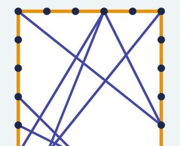
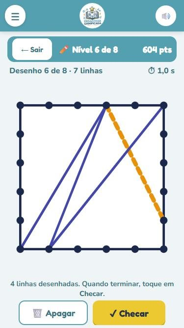
🧩 Quebra-Cabeça de Pixels
Psicopedagogia e Matemática
Para que serve
- Trabalha a percepção visual, a orientação espacial e o uso de coordenadas (linhas e colunas numeradas).
- Treina planejamento e análise de formas: olhar uma peça e descobrir onde ela se encaixa no desenho.
- O relatório mostra o tempo de cada desenho e quantas peças foram colocadas no lugar errado.
Como jogar
- No alto aparece o modelo em pixels; embaixo, o tabuleiro com o contorno do desenho. Os dois têm as linhas e colunas numeradas para comparar.
- As peças ficam numa faixa embaixo, que rola para os lados. Arraste uma peça para cima e solte no tabuleiro.
- Colocou no lugar errado? Arraste a peça de volta para a faixa e tente de novo.
- Com todas as peças no tabuleiro, toque em ✔ Conferir. As erradas ficam vermelhas e voltam para a faixa.
- Montou sem erros, o próximo desenho é maior e tem mais peças (6 níveis, da tartaruga ao foguete). São 5 desenhos.
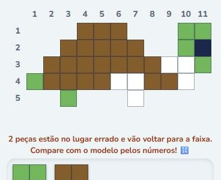
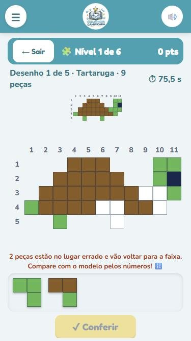
Jogos de outros sites ↗
Estes jogos abrem em outra aba. Cada um pede o nome do aluno de novo e tem o próprio relatório, que fica com o profissional responsável pelo jogo.
🔤 ABC da Tia Ana
Português e Psicopedagogia · outro site ↗
Para que serve
- Apoia a alfabetização: o aluno monta palavras com letras e sílabas.
- Liga a figura à palavra escrita e treina a ordem das letras.
- O relatório mostra o tempo em cada letra ou sílaba e as maiores dificuldades.
Como jogar
- Digite o nome e toque em JOGAR.
- Olhe a figura e arraste cada letra até o lugar certo para formar a palavra.
- A partida tem tempo (2 minutos): monte o máximo de palavras que conseguir.
- No fim, o relatório pode ser enviado para a Tia Ana ou baixado em PDF.
🌎 Desafio da Rotina (My Day)
Inglês · outro site ↗
Para que serve
- Ensina o vocabulário da rotina em inglês: acordar, tomar café, ir à escola…
- Treina a leitura e a tradução nos dois sentidos (português ↔ inglês).
Como jogar
- Digite o nome e toque em Let's go ▶.
- Escolha o modo: PT ➜ EN (a agenda vem em português e você escolhe a frase em inglês) ou EN ➜ PT.
- Escolha o nível: Fácil (frases curtas) ou Difícil (frases completas) e um personagem.
- Abra a agenda e escolha a frase certa para cada horário do dia.
- No fim do dia: pontuação, acertos, erros e a correção (dá para baixar em PDF).
🧠 Desafio das Peças com a Nágila
Psicopedagogia · outro site ↗
Para que serve
- Trabalha o raciocínio, o planejamento e a estratégia: pensar antes de mover.
- Ajuda a observar a atenção e a impulsividade (o tempo que o aluno leva para pensar em cada jogada).
- O relatório traz as habilidades observadas. São indicadores para apoiar a profissional, não um diagnóstico.
Como jogar
- Digite o nome e escolha: Fácil, Médio ou Difícil contra a Nágila, ou 2 jogadores.
- O objetivo é levar todas as suas peças para o outro lado.
- Ande pelas linhas, uma bolinha por vez. Não pode pular nem comer peça.
- Toque na sua peça e depois na bolinha que brilha (ou arraste). O seu relógio só anda na sua vez.
🐝 Hive (Colmeia)
Psicopedagogia · outro site ↗
Para que serve
- Desenvolve a estratégia e a capacidade de prever a jogada do outro.
- Treina o pensamento espacial, o respeito às regras e a tomada de decisão.
Como jogar
- Jogue com 2 jogadores no mesmo aparelho ou contra a máquina.
- O objetivo é cercar os 6 lados da Abelha Rainha do adversário. E não deixar a sua ser encurralada!
- Na sua vez, coloque uma peça nova ou mova uma peça do tabuleiro. Cada bicho anda de um jeito:
abelha 🐝, besouro 🪲, gafanhoto 🦗, aranha 🕷️ e formiga 🐜.
- A peça nova só pode encostar nas peças da sua cor. A Rainha tem que entrar até a sua 4ª jogada.
- Nenhum movimento pode separar a colmeia em duas partes.